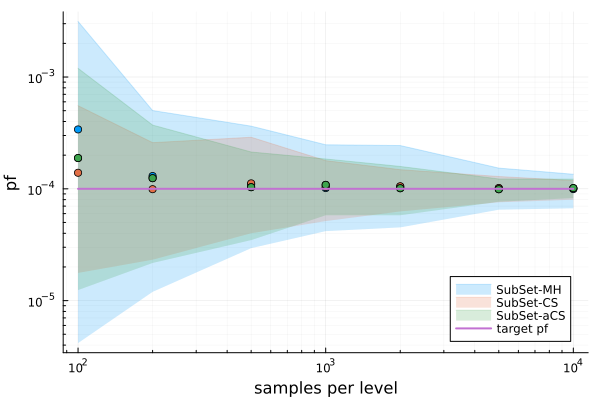
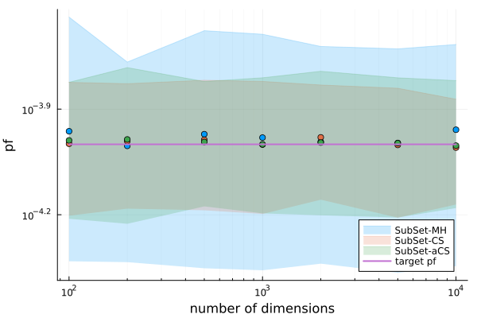

High dimensional Subset simulation
Subset simulation
The implemented subset simulation algorithms SubSetSimulation (using Metropolis-Hastings MCMC), SubSetInfinity (conditional sampling MCMC) and SubSetInfinityAdaptive (adaptive conditional sampling MCMC), work efficiently in high dimensions. This benchmark shows how these algorithms scale with increasing number of dimension N and increasingly smaller target probability of failure pf_target.
Example function
In this example, the test model will be sum of independent standard normal distributions
\[f_N(X) = \sum^N_i X_i,\]
where $X_i \sim \Phi(0, 1)$ are standard normal random variables. We will define a linear limitstate
\[g_N(X) = C_N - f_N(X),\]
where $C_N$ will be defined such that the failure probability $\mathbb{P}(g(X) \leq 0)$ matches a pre-defined value pf_target.
We can find $C_N$ analytically, depending on the chosen number of dimensions and target probability of failure
\[C_N = F_{\Phi_{\sqrt{N}}}^{-1}(1 - p_{\text{target}}),\]
where $F_{\Phi_{\sqrt{N}}}^{-1}$ is the quantile function of a Gaussian distribution, with zero mean and standard deviation sqrt(N).
Since the dimension and failure probability are two parameters of this numerical experiment, we can dynamically create the required number of random variables using broadcasting
using UncertaintyQuantification
N = 2000
inputs = RandomVariable.(Normal(), [Symbol("x$i") for i in 1:N])
The model can be defined generalized for arbitrary dimensions by summing the columns of the DataFrame. Using names(inputs) to select the columns we can safely exclude any extra variables that might be present.
f = Model(
df -> sum(eachcol(df[:, names(inputs)])),
:f
)Next, the pf_target and corresponding limit state are defined.
pf_target = 1e-9
fail_limit = quantile(Normal(0, sqrt(N)), 1 - pf_target)
function g(df)
return fail_limit .- df.f
endFor this benchmark, the probability of failure will be estimated using all available variants of Subset simulation
subset_MH = SubSetSimulation(2000, 0.1, 20, Uniform(-0.5, 0.5))
subset_CS = SubSetInfinity(2000, 0.1, 20, 0.5)
subset_aCS = SubSetInfinityAdaptive(2000, 0.1, 20, 200)Although standard Monte Carlo simulation works independently of dimension, for a target failure probability of $10^{-9}$, even with a billion $10^9$ samples it can return $p_f=0$.
As a first benchmark the three subset simulation algorithms are used to solve the example problem with a fixed number of dimensions N=200 and sample size per level N_samples=2000 for increasingly smaller target probability of failures. The following figure shows the average estimated probabilities of failure and the standard deviation resulting from 100 independent simulation runs. Note how the variance of the estimation increases for smaller pf values. However, in comparison, the variance of the Metropolis-Hastings variant is higher than the variance of the conditional sampling methods.

For the next benchmark, the number of dimensions remains fixed at 200 while the number of samples is increased to estimate a target probability of failure of $10^{-4}$.

The final benchmark uses the same fixed target $p_{f} = 10^{-4}$ and again keeps the number of samples constant at 2000 per level. This time, the number of dimensions is increased to raise the complexity of the problem.
